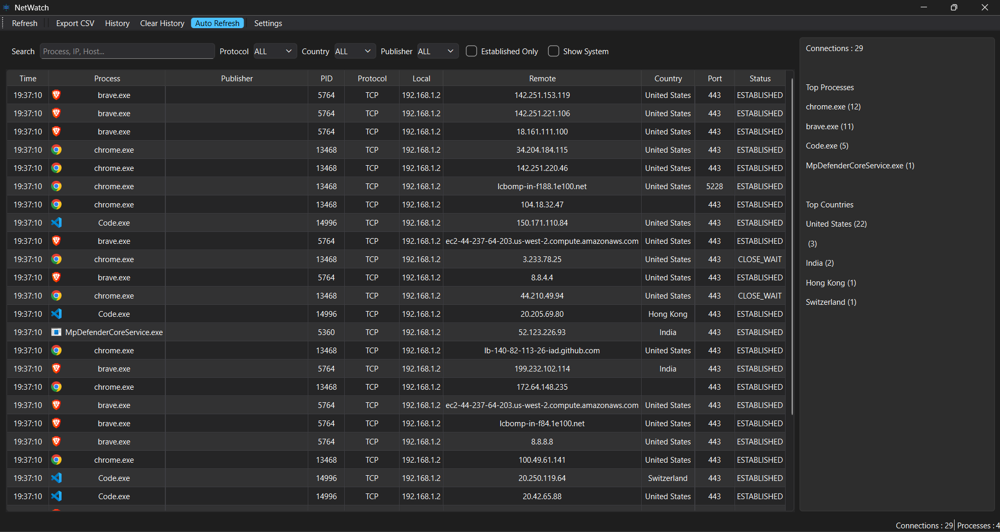
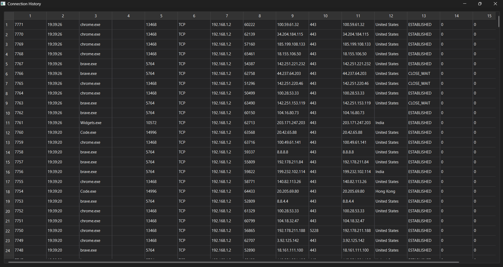
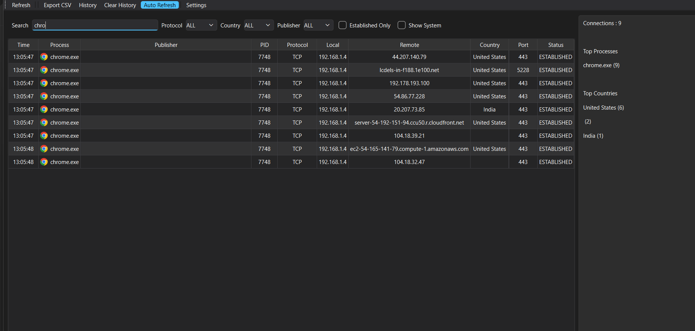

NetWatch is a modern, open-source Windows application that displays live Internet connections made by running applications with DNS resolution, GeoIP lookup, connection history, statistics, and much more.
Unlike packet sniffers, NetWatch focuses on showing which applications are communicating over the Internet. It enriches each connection with process details, executable information, publisher, DNS hostname, country, and connection history.
Displays active TCP and UDP connections in real time.
Automatically resolves IP addresses into hostnames.
Shows the country of every remote connection.
Saves previous connections into SQLite.
Export current connections for auditing and reporting.
Alerts when new applications connect to the Internet.



NetWatch is an open-source application and is currently not digitally signed.
Windows may display "Windows protected your PC" the first time you launch it.
You can inspect the complete source code on GitHub before running the application.